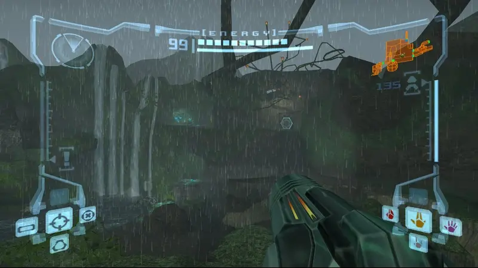
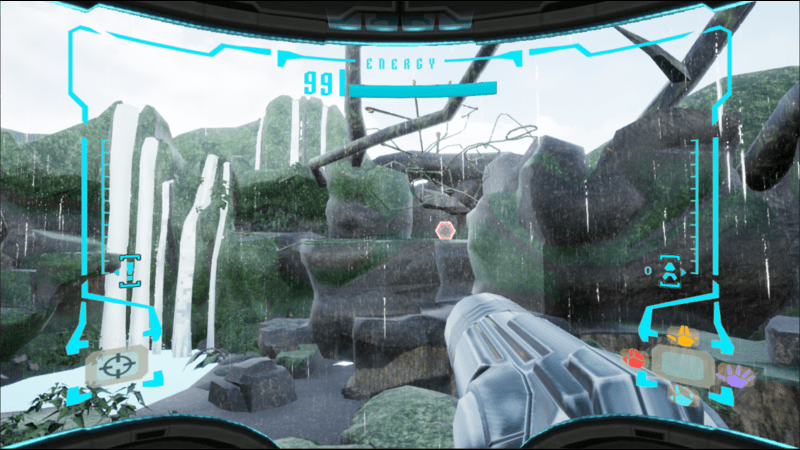

Project Information
- Category: Unreal Engine Project
- Language: C++
- Project Date: 30 May 2022
- Made by:
- Mario Galán Sobrino
- Sebastián Valdés Sánchez
Our first Game made in Unreal Engine 4
Our engine project draws inspiration from the original Metroid Prime for the GameCube from 2002. We have endeavored to recreate it as faithfully as possible, adapting it to the best of our abilities. We have utilized environments and enemies from the first Metroid Prime to enhance realism.
Features
- Enemies Patrol IA
- Lock On Enemies
- Drops (lifes & missile containers)
- Destructible Meshes
- Rain & Snow
- Samus Morph Ball
- Unreal Engine Particles
My Rol in this Project
- Samus Movement.
- Samus Morph Ball Transition.
- Morph Ball Bombs.
- Change between Samus Beams.
- All In-Game Animations (Anim Instance, Anim Notify...).
- Widget & Interface.
- Particles.
Technical challenges
- Samus Curved HUD:
- Samus:
- Enemies IA:
Recreating the curved interface to simulate being inside Samus' helmet has been quite a challenge. Initially, we weren't sure how to approach it, but after numerous attempts and learning from our mistakes, we successfully achieved a Curved Widget with an interface closely resembling the original one.
|

Original HUD |

Our HUD |
Developing Samus has been a significant effort due to the multitude of mechanics it entails. The beam swapping menu, enemy targeting, object attraction, charged shots, morph ball transformation... The abundance of highly complex mechanics has posed a considerable challenge in working with Samus.
Our game features AI in all four enemy characters, employing two distinct types of AI. The first is a patrolling AI coupled with player pursuit. When the player is not within its line of sight, the AI follows a predefined path set by the developer, and upon spotting the player, it engages in pursuit. The enemies governed by this AI are the Bettle, Sheegoth, and Ridley. The second AI exclusively tracks the player, but does so based on sound. Metroids, for instance, start following the player upon hearing their footsteps.